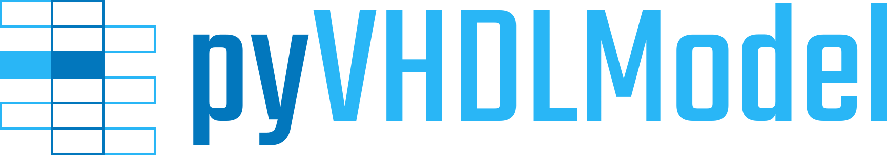

0.8
Introduction
Project Goals
Use Cases
Concepts
Installation/Updates
Dependencies
Test Applications
Main Documentation
0. Pass - Preprocessing
1. Pass - Tokens
2. Pass - Blocks
3. Pass - Groups
4. Pass - Code-DOM
VHDL Language Model
References
Python Class Reference
Scripts and Applications
Appendix
ChangeLog
Apache License 2.0
Creative Commons Attribution 4.0 International
Glossary
Index
Python Module Index
pyVHDLParser
»
ChangeLog
Edit on GitHub
ChangeLog
¶
Todo
Start to write change logs.